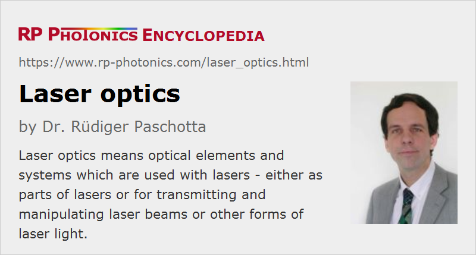

Laser Optics
Definition: optical elements and systems used with lasers - either in lasers or for transmitting and manipulating laser light
German: Laseroptik
Categories: general optics, lasers
How to cite the article; suggest additional literature
Author: Dr. Rüdiger Paschotta
Laser optics essentially means optical elements and systems which are used with lasers – either as parts of lasers or for transmitting and manipulating laser beams or other forms of laser light.
Typical Requirements
Some typical requirements on laser optics, as compared with optics for other purposes such as imaging, are:
- Generally, optical losses need to be minimized, particularly for components which are used within laser resonators. Highly reflecting laser errors, for example, typically have reflectivities like 99.9% or higher, so that the total parasitic losses the round-trip in a resonator often remain well below 1%.
- The surface quality of laser mirrors, prisms etc. generally needs to be rather high, e.g. with an r.m.s. roughness below λ/10. That, however, is similar for imaging optics such as photographic objectives.
- Particularly for use with pulsed lasers with high peak power and pulse energy (mostly Q-switched lasers), laser optics needs to have a high optical damage threshold.
- In many cases, good performance is required only at specific optical wavelengths, i.e., at certain laser lines, which are often in the infrared spectral region. Therefore, achromatic optics are often not required. In some cases, however, one requires specified properties at multiple wavelengths, e.g. for a laser wavelength and for frequency-doubled light. Also, some lasers, e.g. ultrashort pulse lasers with particularly short pulse durations, have a substantial optical bandwidth and therefore require optics with suitable broadband properties, for example in terms of reflection bandwidth and chromatic dispersion.
Optics in Lasers
A range of passive optical components is often used in lasers:
- Laser mirrors are often used for constructing laser resonators. Most of them are highly reflecting dielectric mirrors, while others have some partial transmissivity for use as output couplers. Dichroic mirrors are often used for injecting pump light into a laser resonator. For ultrafast lasers, one often requires dispersive mirrors.
- Lenses are not used much in laser resonators; focusing or defocusing is more often done with curved mirrors in order to minimize propagation losses and parasitic reflections.
- Prisms are more often used outside lasers, but sometimes also inside, particularly for dispersion compensation in ultrafast lasers.
- Wavelength tuning is often achieved by inserting some kind of optical filter in a laser resonator – for example, an etalon or a Lyot filter.
- Passive mode locking can be done by using a saturable absorber.
Further, some kind of laser gain medium is required, which may for example be a laser crystal, a rare-earth doped fiber, a semiconductor gain chip (e.g. in an external-cavity diode laser or a vertical external-cavity surface-emitting laser) or a gas discharge tube.
In some cases, one requires some kind of optical modulator – for example, an acousto-optic or electro-optic modulator for Q switching or mode locking.
Optics for Laser Light
Outside a laser resonator, laser light often needs to be transported and manipulated, for which different kinds of optical components and systems can be used:
- Mirrors are used for redirecting laser light, also for precisely adjusting the beam path. For example, one often uses a pair of mirrors, each one changing the beam direction by approximately 90°. Fine alignment of the beam is possible with micrometers screws on the mirror holders.
- Lenses (including cylindrical lenses) are often used for collimating a laser beam, or for modifying its beam radius, or for tight beam focusing. Sometimes, such things are done with complete assemblies like beam collimators, beam expanders and focusing objectives, which may contain multiple lenses.
- Anamorphic prism pairs may be used for converting elliptical beam profiles into circular ones.
- Mode cleaners can be used for improving the beam quality.
- Polarizing or non-polarizing beam splitters can be used for obtaining multiple beams or for guaranteeing linear polarization states.
- Waveplates can be used for manipulating the polarization state – for example, for rotating the polarization direction or converting linearly polarized light into circularly polarized light.
- Optical filters may be used to remove unwanted spectral components – for example, residual laser light after a frequency doubler.
- Neutral density filters and other optical attenuators can be used to reduce the optical power. There are also so-called noise eaters which automatically adjust the attenuation such as to obtain a constant output power.
- Faraday isolators are used for protecting a laser source against back-reflected light.
- Various kinds of optical modulators may be inserted, for example intensity or phase modulators or optical switches.
- In some cases, diffractive optics are used, for example for splitting a beam into a large number of beams with a single optical component.
- Unwanted beams may be sent into beam dumps for safely converting the optical energy into heat.
- There are scanning lenses for laser scanners, sending laser beams in variable directions.
Suppliers
The RP Photonics Buyer's Guide contains 91 suppliers for laser optics. Among them:
Questions and Comments from Users
Here you can submit questions and comments. As far as they get accepted by the author, they will appear above this paragraph together with the author’s answer. The author will decide on acceptance based on certain criteria. Essentially, the issue must be of sufficiently broad interest.
Please do not enter personal data here; we would otherwise delete it soon. (See also our privacy declaration.) If you wish to receive personal feedback or consultancy from the author, please contact him e.g. via e-mail.
By submitting the information, you give your consent to the potential publication of your inputs on our website according to our rules. (If you later retract your consent, we will delete those inputs.) As your inputs are first reviewed by the author, they may be published with some delay.
See also: lasers, optics, laser mirrors
and other articles in the categories general optics, lasers
|  |
If you like this page, please share the link with your friends and colleagues, e.g. via social media:
These sharing buttons are implemented in a privacy-friendly way!